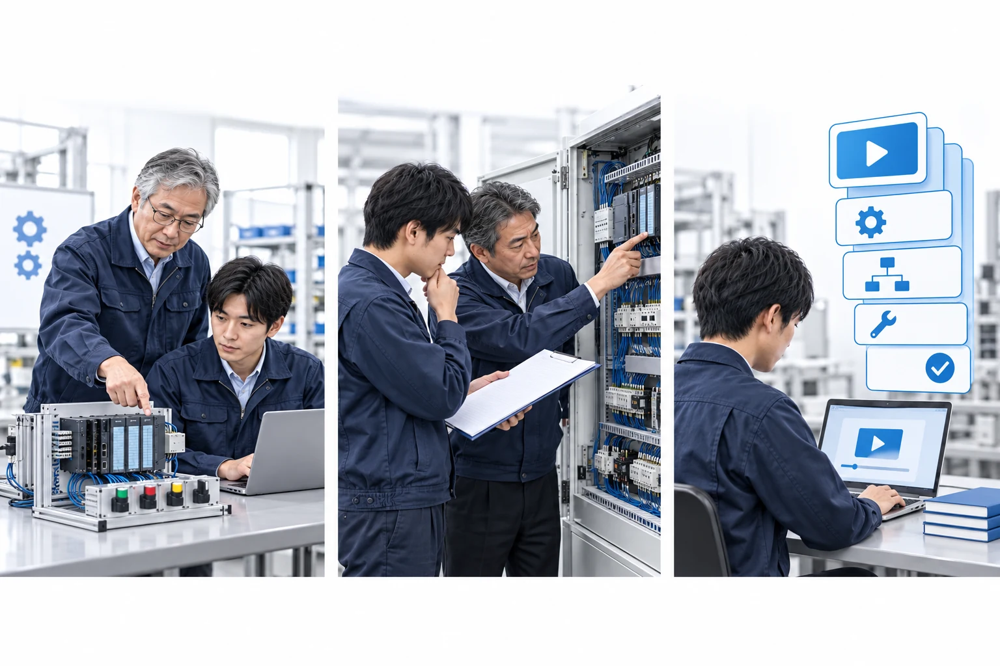

チャットで相談
図面やプログラムの画面を添えて 文章で気軽に相談できます。
製造業の設備・制御・保全部門向け
設計のレビューから不具合の切り分け 立上げの進め方まで。
貴社の設備・図面・制御に合わせて継続的に支援します。

よくある状態
相談できる内容
図面やプログラムの画面を添えて 文章で気軽に相談できます。
画面を共有しながら その場で一緒に確認します。
図面やプログラムなど資料の扱いは 着手前に書面で決めます
担当する技術者
顧問開始までの流れ
扱っている設備と困りごとを送る
相談したい範囲と頻度を整理
支援の範囲と進め方 お見積り
内容を確認してから着手